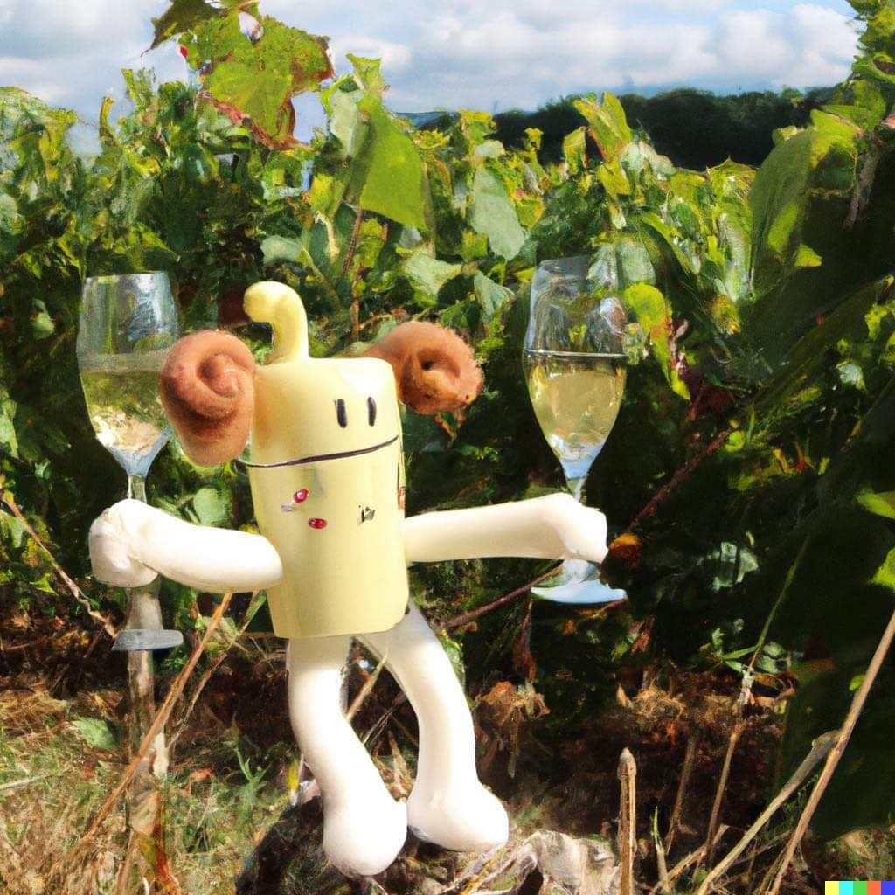

Cremulen
Cremulen
Cremulen er et mytologisk vesen som elsker å drikke crémant i det fri. Den er kjent for sin gode natur, sitt positive syn på verden og sin vennlige evne til å få mennesker til å samle seg.
Cremulen er sjarmerende, men ikke helt ufarlig for en altfor alvorlig stemning. Den kan lure et rom ut av sin egen tyngde, og etterlate folk litt lettere enn de var før.

Myten
Fortellingen om Cremulen
Ifølge legenden ble Cremulen skapt av gudene for å feire og nyte de gode tingene i livet. Den er kjent for sin store appetitt på crémant, for sitt milde vesen og for sin særlige evne til å skape god stemning der den ferdes.
Det sies at Cremulen kan gjøre nesten hva som helst om til crémant. Ingen har noen fullgod forklaring på hvordan dette skjer, men historiene er gamle nok til at spørsmålet sjelden stilles med særlig kraft.
Cremulen hører hjemme ute i det fri, gjerne blant venner, familie og mennesker som har senket skuldrene nok til at noe uventet kan slippe inn. Den er gul, vennlig av natur og lett å kjenne igjen når den først har vært i nærheten.
Der Cremulen viser seg, begynner folk å snakke sammen, pynte seg litt friere, finne på små ritualer og ta med seg historien videre. De som skjønner dette, kalles gjerne Cremulens venner. Slik har det alltid vært med Cremulen.
Spor
Cremulen viser seg stadig oftere
Først kjente bare noen få til Cremulen. Siden begynte sporene å dukke opp flere steder: i klær som bæres uten forklaring, i små fellesskap med navn som allerede høres eldre ut enn de er, i kort som deles ut til fremmede, og til og med i maritime kretser der Cremulen tydeligvis også har funnet fram.
Slik er det gjerne med Cremulen. Den annonserer seg sjelden stort. Den blir heller gjenkjent etterpå, når noen legger merke til at stemningen har endret seg, at et navn har festet seg, eller at en gruppe mennesker plutselig har fått et lite ritual de ikke helt kan forklare opprinnelsen til.
Å ligne Cremulen
Det finnes en måte å være i verden på
Den som vil ligne Cremulen, trenger ikke store ord. Det holder å gjøre rommet litt rausere, invitere noen med ut, møte det merkelige med godt humør og la en vanlig anledning få en anelse høytid.
Slik føres Cremulen videre av Cremulens venner: mennesker som er vennlige, har det gøy, og helst tilbringer litt tid under åpen himmel med noen de er glade i. Alle vet dette.
Cremulens dag
Den første lørdagen etter 28. mai
Det sies at Cremulen først viste seg i slutten av mai, da våren hadde blitt trygg nok til at folk kunne bære bord, glass og fjær ut i det fri. Datoen ble siden husket som 28. mai, men Cremulen har aldri vært strengere enn nødvendig med kalenderen.
Derfor feires Cremulens dag helst første passende lørdag etter 28. mai. Den feires med mennesker man liker, ute hvis været tillater det, med fjær, små taler, noe godt på bordet og minst én handling som gjør dagen lettere for noen andre.
Å feire
Slik holdes Cremulens dag
En Cremulen-feiring begynner gjerne med at noen ønsker velkommen på vegne av Cremulen. Deretter følger mat, samtaler, en skål eller et annet samlende tegn, og en enkel markering av alt som fortsatt er godt nok til å feires.
Fjær kan bæres. Fortellinger kan overdrives. Nye regler kan oppstå og forsvinne samme kveld. Det viktige er at ingen går derfra med mindre lys enn de kom med.
Det digitale museet
Originalen fra 2023 er bevart
Den første kjente nettsiden om Cremulen står fortsatt her som tidskapsel. Den er et viktig første spor i hvordan Cremulen fikk form på nett, og et minne om hvor sterkt et lite bilde og en liten fortelling kunne treffe.